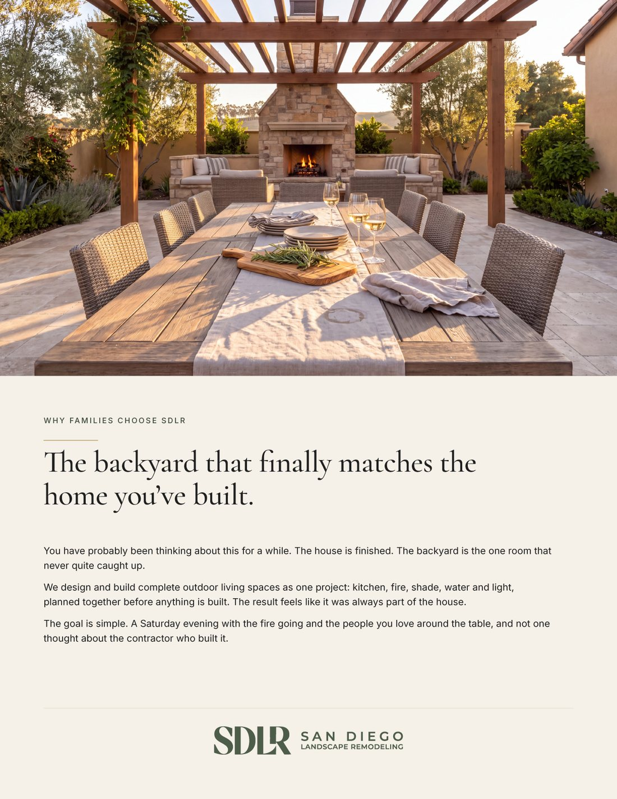
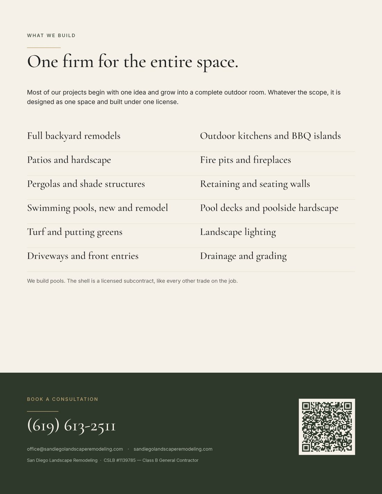
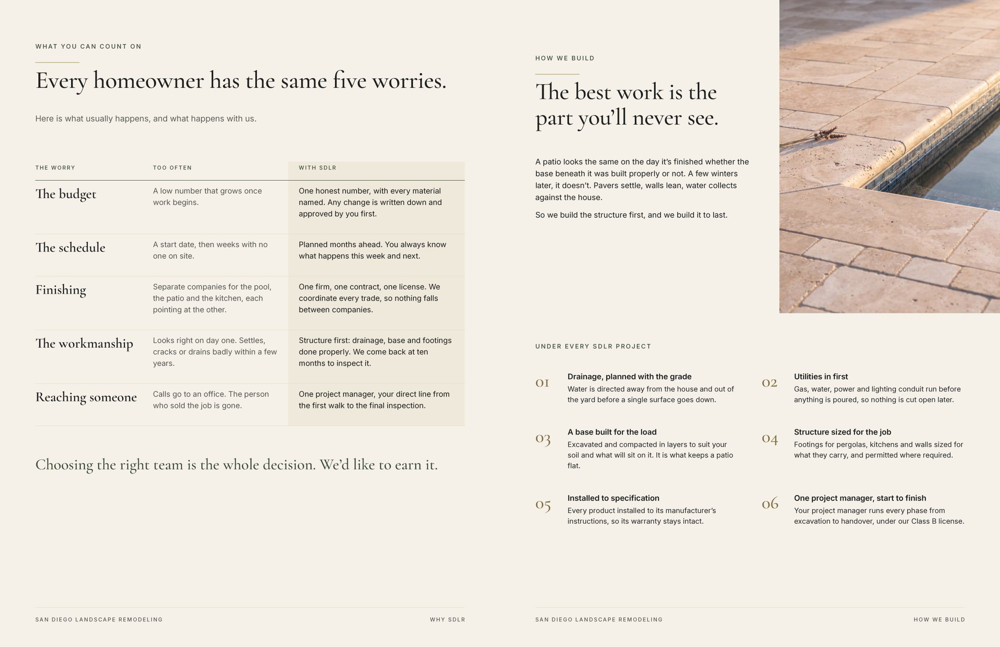
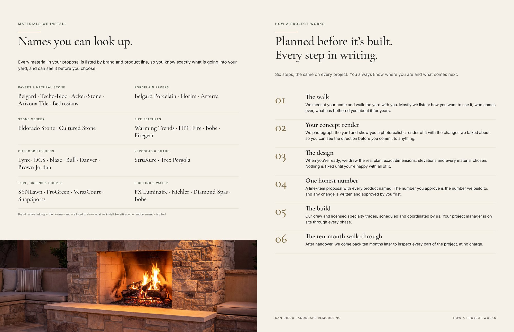
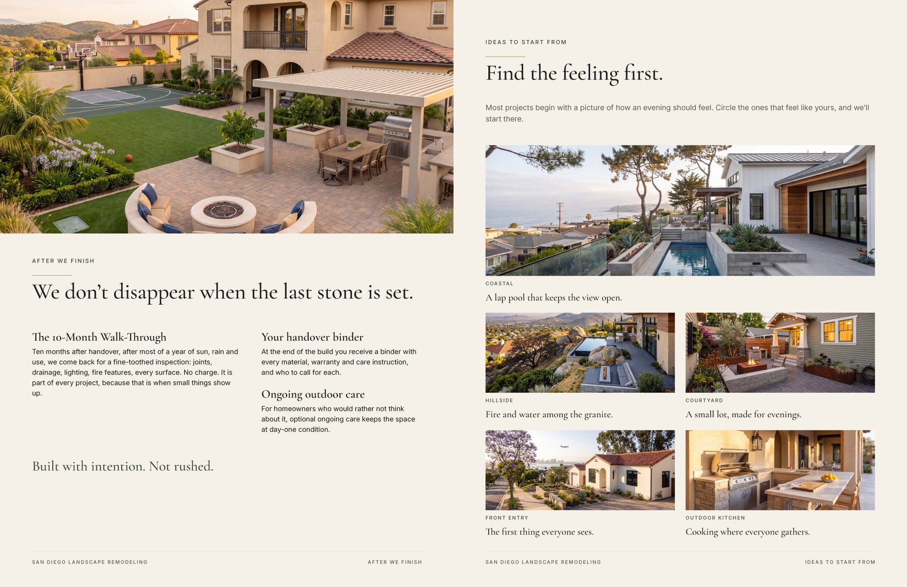
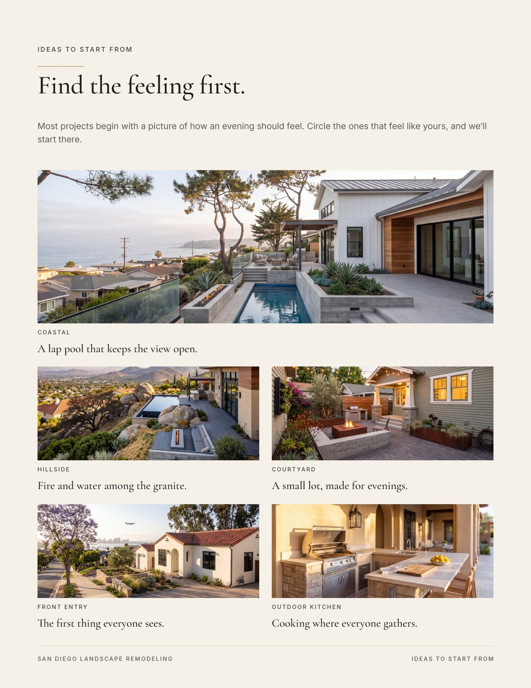
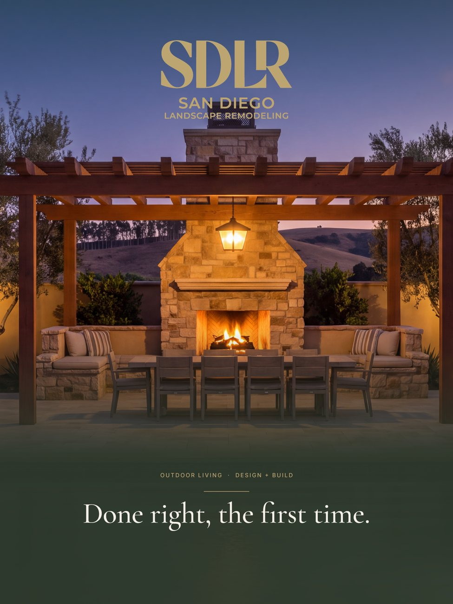
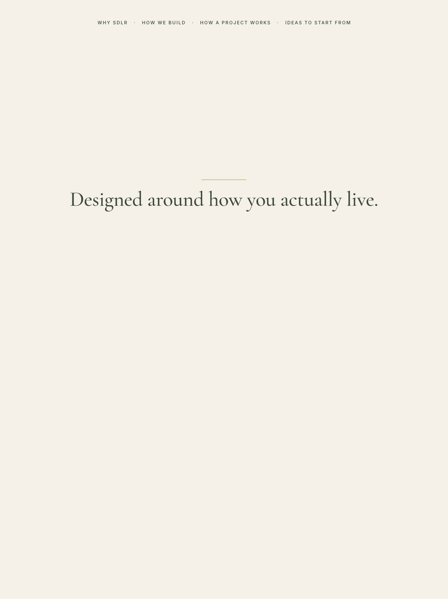

The four loose sheets are now one 8.5 × 11 booklet, stapled on the fold, standing in the right pocket. It reads front to back like a small magazine and stays together when it gets passed around the house. Nothing in it is personalised, so it prints in bulk.





Selected work can’t print until there are real finished-project photos with each client’s OK. Until then page 7 is “Find the feeling first.”: five styles (coastal, hillside, courtyard, front entry, outdoor kitchen) and one line asking them to circle the ones that feel like theirs. The captions name a style, not a project, so nothing claims we built these yards. When real photos are ready, page 7 switches back to the Selected work layout with one setting.



Outlined CMYK, 0.125 in bleed. The booklet PDF is eight single pages in reading order, which is what booklet printers ask for. The editable layered Illustrator files are in Drive under 02 Clients/san-diego-landscape-remodeling/assets/print-ready/leave-behind-kit/2026-11-23-v6/.